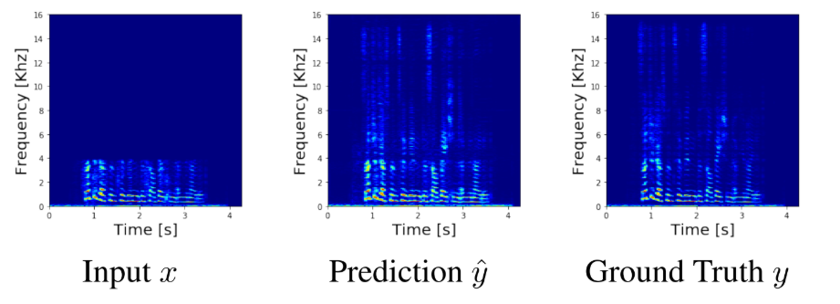
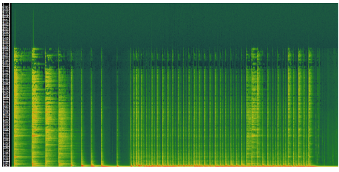
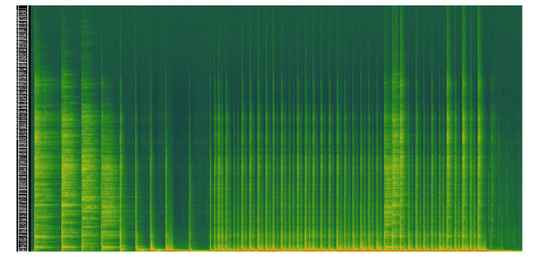
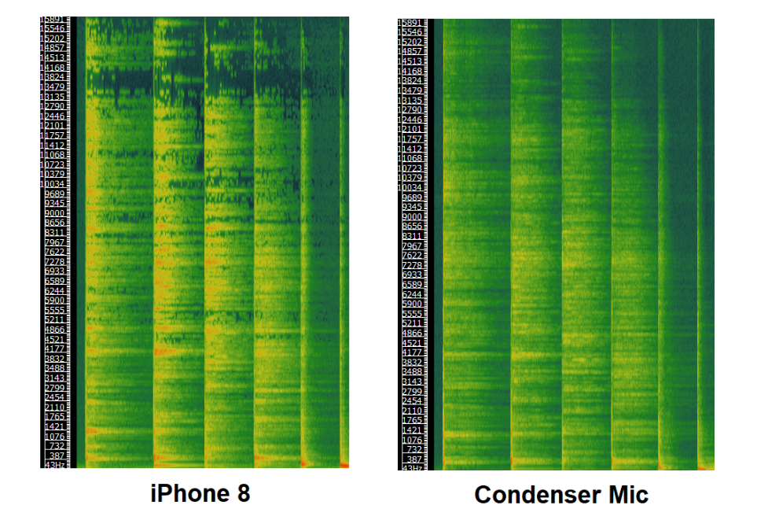

Introduction
In the current generation, smartphones are predominantly used to record various events, be it social gatherings, conferences, music concerts or daily life videos. The quality of microphones embedded in the mobile phones is increasing with time but it is still not at par with the studio quality recordings. It is also impossible to physically fit a high quality microphone in a mobile phone due to obvious reasons (weight, dimensions etc.). Due to the bad quality, in some microphones, the base / low-frequency sounds are usually distorted and mostly sound very noisy, and in some cases, the microphone only focuses on the high pitched sounds (not capturing the base at all). As a result, anybody can distinguish between the recordings made by a studio mic and a mobile phone mic. We aim to create an application which lets a user record on his microphone and perform intelligent transformations and enhancements so that the output recording has high quality without any noise.
We research on Audio Enhancement, not Super-resolution
Audio super-resolution is the technique that increases the sampling rate of signals such as speech or music. In this case, we have an input which has low frequency content only and the super-resolution system tries to recreate the high frequency band, hence increasing the frequency resolution of the audio. This task has got a lot of attention by the researchers [Kuleshov et al., ICLR Workshop 2017], [Lim et al., ICASSP 2018]. The basic pipeline follows some deep learning technique to recreate the high band frequencies. Following is an example of the input spectrogram and the corresponding predicted high resolution audio by a super-resolution system.

The problem which we are trying to solve is Audio Enhancement, which differs from the idea of super-resolution in many ways. In our case, we aim to use a mobile recording which might have a sampling rate of 32 KHz and enhance the 32 KHz of data using the high quality studio mic as the target/output. Following is an example of an audio recording (a music file) using iPhone 8 (having 32 KHz sampling frequency):

Following is an example of audio recording using a condenser mic (fs = 44 KHz):

To see the differences clearly, following is the zoomed-in version of both recordings:

We can clearly see a difference which is the probable reason that iPhone 8 recording is not as good as the studio recording. We aim to enhance these frequencies or recreate the missing parts of the mobile recordings in this research.
We first use a low-pass filter on the high quality studio mic to extract the 32 KHz recording and use this as the target and the mobile recordings as the input. Once this mapping is created using deep learning techniques, we could incorporate a super-resolution system to recreate the high band frequencies.
Therefore, the idea of converting the mobile recording to a high quality recording could be divided into two parts: first being the enhancement and second being the super-resolution. Note that we are not trying to increase the frequency resolution of the audio by mapping to 48 KHz output of the studio mic. We aim to work on the enhancement and in our knowledge, the problem like this has never been explored before. We believe that one can use the mobile samples, enhance it using the enhancement model and based on the state-of-the-art systems for super-resolution, recreate the studio quality recordings with a minimal error.